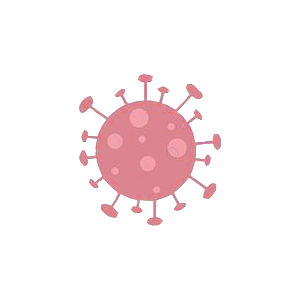
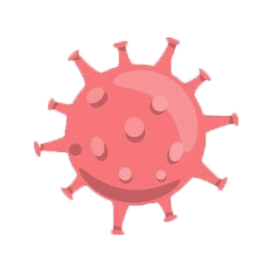
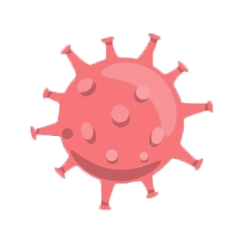

with Corona
 

위드 코로나 시대에
예방과 회복을 위한 식단을 추천드립니다
Question
|
DIET WITH COVID
코로나 감염 예방 및 회복을 위한
식단을 추천드립니다
식단과 영양소에 따른 데이터로
코로나에 대항하기 좋은 영양소를 제안
위드 코로나 전환과 함께 높아진 감염 위험을
예방 및 회복하기 위해 개인 맞춤형 식단 추천
객관적인 코로나 증상 분석 및 확진 가능성을 제공
Data-sets Used
위드 코로나 시대를 이해하기 위한
시각화 데이터 제공
* 국가별 영양소 분포에 따른 코로나 확진률 및 회복률 데이터
* 식품의약안전처 DB 식품별 영양소 함량 데이터
* 이스라엘 보건청 증상에 따른 코로나 검사 데이터